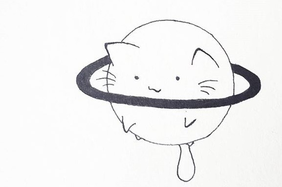
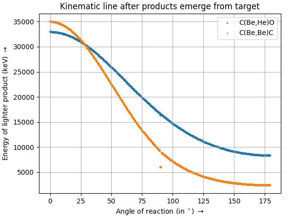

I am an undergraduate intern at the Nuclear Astrophysics Laboratory at Bose Institute, India, working under the supervision of Prof. Dhruba Gupta (Professor, Department of Physical Sciences, Bose Institute). The group’s work mainly involves performing nuclear experiments to investigate nuclear structure and their implications in astrophysics using rare isotope beams in state-of-the-art accelerators around the world.
Some of my works in this laboratory have been:
Kinematics for Two-Body Nuclear Reaction in Python
Mentor: Dr. Kabita Kundalia
We have designed a Python-based computational tool designed to simulate and visualize kinematic curves for low-energy, two-body nuclear reactions (A(a,b)B). The tool leverages energy and momentum conservation laws, incorporating Q-values and non-relativistic approximations, to predict the energy-angle correlations of reaction products. The tool aids in experimental design, kinematic validation, and theoretical comparisons for nuclear physics research.
Key Features:
- User input on all target-projectile-detector properties (optional detector system)
- Reaction position and angular distribution simulated using MCMC
- Energy loss considered inside target and detector
- Multiple reactions simulation provision
Code : To be made available soon… 
Monte Carlo simulations for Nuclear Reaction Experiments
Mentor: Dr. Kabita Kundalia
A key step in nuclear experiments involve designing and simulating the reaction setups using specialised softwares. I have been working on some specialied computational tools like NPTools, GEANT4 and CERN-ROOT to form detector systems and simulate reactions and extract its data for analysis.
Major Tasks:
- Modelling particle matter interactions in nuclear reactions
- Designing complex detector geometries based on the nuclei involved to model the reactions and energy depositions.
- Analysing these outputs of simulation using ROOT framework, comparing with literature to improve detector efficieny, understand reaction cross section, determine input energy and particle count, etc.
Resonance analysis using R-Matrix
Mentor: Ritankar Mitra
Nuclear resonance analysis is a powerful tool for studying nuclear structure and reaction dynamics. The R-matrix formalism provides a robust framework for modeling resonant behavior and is useful for identifying and characterizing energy levels in compound nuclei, which appear as peaks or dips in reaction cross-sections. I have been working with the AZURE2 code, written in C++ to determine nuclear resonances in compound nucleus $^{16}O$ through the reaction $^{12}C(\alpha,\alpha)^{12}C$. This calculation of differetial reaction cross sections as well, with varying excitation energy.
Related material
To be made available soon…